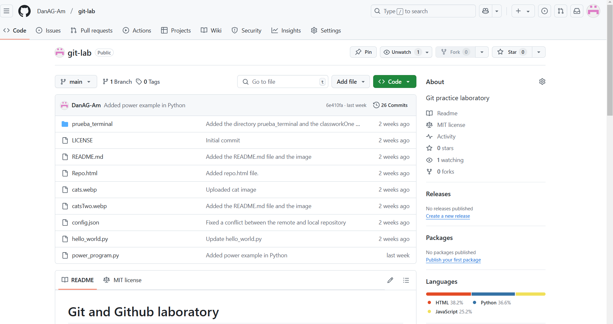
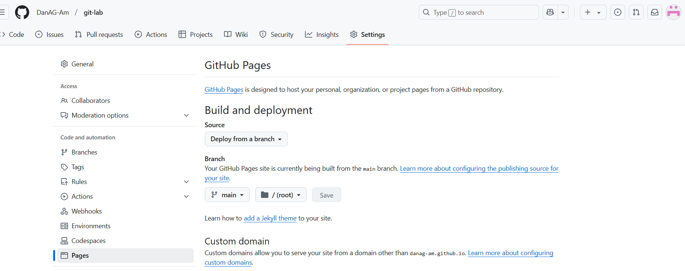

Welcome to the Git and Github Section
We will explore several features found on Github, git commands that aid with collaborative work and how to manage a remote and local repository without losing all your files...
We will explore several features found on Github, git commands that aid with collaborative work and how to manage a remote and local repository without losing all your files...
Knowing the workflow enables you to track your projects and collaborate with others efficiently. Let's go through some github commands that take your remote repository to a local one and vice-versa.
git init: Initialize a new repository.git clone [url]: Clone a repository locally.git status: Show the status of different files (if you added, deleted or committed any).git add [file]: Add files to the staging areagit commit -m "message": Commit the files in the staging area, as well as add a message to describe to yourself or your team what the changes are about.git push: Upload your changes to the remote repositorygit pull: Bring the changes from the remote repository into the local one.git branch: Show any existing branches in your repository.The same commands apply when working on a branch and pushing or pulling changes from it. Now, this is just a basic workflow. Lets take a look at how we can do different things in github to bring a repository to life.
Here are some of the features that you can use in github to make your workflow more appealing.
Github allows you to implement code, image from the repository or external sources, lists and different semantic features just like in html, such as headers.
You will mostly find such type of text in a README file, which describes the repository and the code implementation.
Github also allows you to track branches, check suggested workflow and the distribution of the programming languages found in your repository
Recently, we learned how to turn a repository or a specific file found within the same onto a web page. This is specially useful when you need to deploy your personal portfolio, for example.
